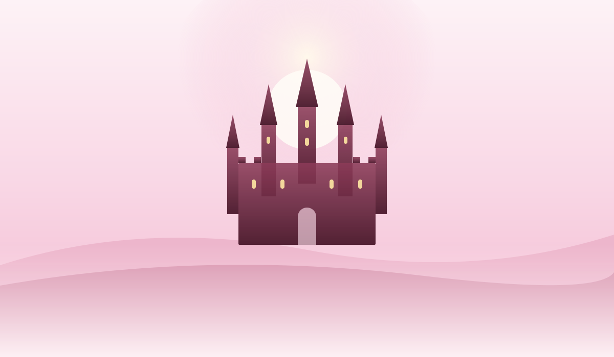
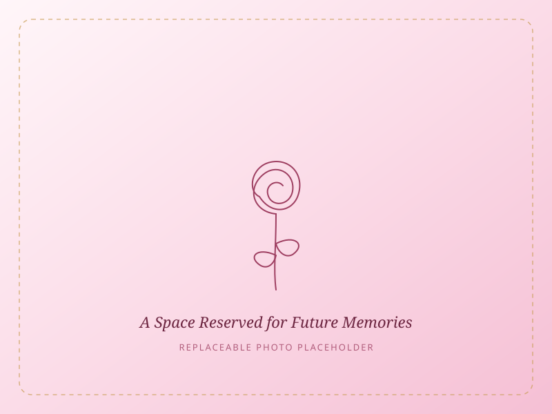
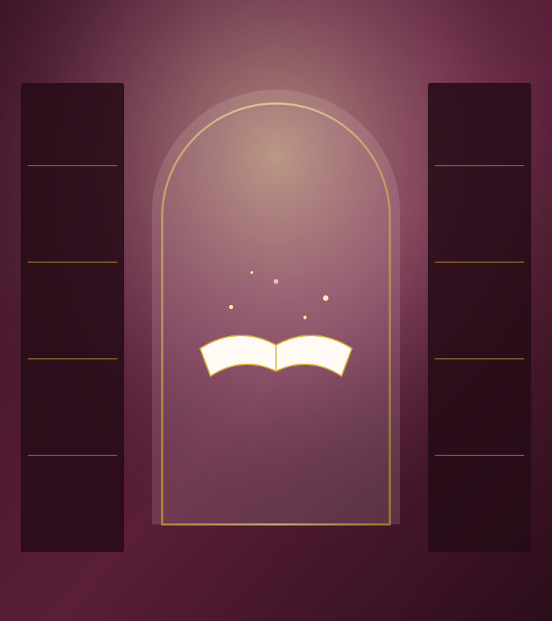

01
Your Presence Feels Effortlessly Warm
There is an ease to the way you carry yourself. Being around you doesn’t feel performative or guarded—it feels genuine, calm, and naturally uplifting.
Chapter Zero • A Quiet Dedication
Written gently, without rush—just a small pink corner of the internet made to bring a smile to your face.
Best enjoyed slowly • Sound optional

Some people walk into a room—or a day—and quietly change the lighting. Nothing loud, nothing forced; just a warmth that stays with you long after the conversation ends.

Most days move in predictable rhythms. You wake up, go through your routine, and expect the day to look much like the one before it.
And then, every once in a while, you cross paths with someone who makes you pause and think, “I’d really like to know more about her.”
We haven’t known each other for years, and this isn’t a grand declaration pretending we have. It’s simply an honest note to say that meeting you has been one of my favorite unexpected moments lately.
“The best chapters never rush their opening pages—they simply make you excited to keep reading.”
Sincere impressions from the moments we’ve shared so far—no exaggeration, just truth.
There is an ease to the way you carry yourself. Being around you doesn’t feel performative or guarded—it feels genuine, calm, and naturally uplifting.
Some smiles are polite; yours feels real. It’s the kind that instantly makes a conversation brighter and stays in someone’s mind hours later.
Mary Joy—there really is a lightness in your energy that lives up to your name without you even trying.
Loving the color pink and admiring Belle says something lovely about you: you appreciate beauty, gentleness, curiosity, and stories with depth beneath the surface.
Among all the classic tales, there is a reason Belle stands apart. Her story was never about waiting around for glittering spectacles—it was about having an open mind, a curious spirit, and a heart that values character over noise.
She found wonder in quiet pages, spoke with grace, and saw beauty in the small, meaningful details that others walked right past.
“True charm isn’t loud. It lives in kindness, thoughtfulness, and the gentle way someone treats the world around them.”
— A note inspired by your favorite princess
Tap or hover over each rose to reveal a small thought I wanted to leave here for you.
Every story starts with a few small markers before the bigger chapters are ever written.
A simple moment that didn’t announce itself as special at first—yet looking back, it’s the exact page where everything shifted in a brighter direction.
Noticing your kindness, your sense of humor, and the quiet grace you carry. Realizing I look forward to every chance we get to talk.
Taking a little time to build something thoughtful just for you—because someone like you deserves effort that feels personal and real.
Coffee conversations, shared playlists, easy laughter, and memories still waiting to happen—if and whenever you’d like to explore them.
Click the wax seal below to open the envelope and unfold the note inside.
Written on a quiet day, thinking of you
I wanted to make something a little different for you—something slower and more thoughtful than a quick message on a screen.
Since we recently met, I’ve found myself genuinely enjoying every moment we’ve talked. There is something rare about meeting someone who feels both inspiring and easy to be around at the exact same time. You don’t try to impress anyone, yet you leave a lasting impression anyway.
I know we are still right at the beginning of getting to know each other, and I respect that completely. I’m not here to rush anything or write a story ahead of time. I just wanted you to know—clearly and sincerely—that you’ve caught my attention in a truly wonderful way.
Whether this little page simply makes you smile today or becomes the first small memory we look back on later, building it for you was already worth it.
In Beauty and the Beast, the enchanted rose measures time. Here, it represents something much gentler: patience, care, and quiet potential.
A rose doesn’t bloom all at once in a single second. It opens petal by petal, given warmth, light, and space to become what it’s meant to be.
That’s how I see getting to know you—unhurried, intentional, and worth every bit of care.
Nothing extravagant—just the simple, genuine things that make getting to know someone memorable:
No rush, no pressure, and no expectations—take all the time in the world. Even just getting to know you right now is already a privilege.
You have a really lovely energy, Mary Joy. Whoever gets the chance to know your heart is genuinely lucky—and I’m really glad our paths crossed.
P.S. Yes, every shade of pink on this page was chosen just for you.